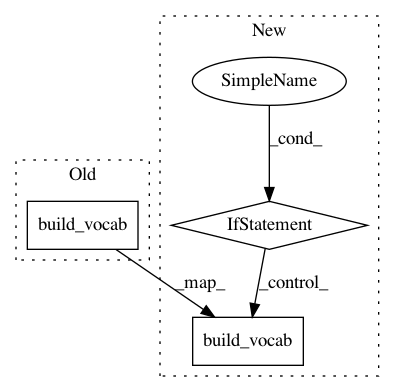

88508c0fb6791ac415f66405c78cd30b315d395a,snli/train.py,,,#,15
Before Change
train, val, test = datasets.SNLI.splits(inputs, answers)
inputs.build_vocab(train, vectors=(args.data_cache, args.word_vectors, args.d_embed))
answers.build_vocab(train)
train_iter, val_iter, test_iter = data.BucketIterator.splits(
(train, val, test), batch_size=args.batch_size, device=args.gpu)
After Change
train, val, test = datasets.SNLI.splits(inputs, answers)
if os.path.isfile(args.vocab_cache):
inputs.build_vocab(train, lower=args.lower)
inputs.vocab.vectors = torch.load(args.vocab_cache)
else:
inputs.build_vocab(train, vectors=(args.data_cache, args.word_vectors, args.d_embed), lower=args.lower)
os.makedirs(os.path.dirname(args.vocab_cache), exist_okay=True)
torch.save(inputs.vocab.vectors, args.vocab_cache)
answers.build_vocab(train)
train_iter, val_iter, test_iter = data.BucketIterator.splits(
(train, val, test), batch_size=args.batch_size, device=args.gpu)
In pattern: SUPERPATTERN
Frequency: 4
Non-data size: 3
Instances
Project Name: OpenNMT/OpenNMT-py
Commit Name: 88508c0fb6791ac415f66405c78cd30b315d395a
Time: 2017-01-24
Author: bryan.mccann.is@gmail.com
File Name: snli/train.py
Class Name:
Method Name:
Project Name: OpenNMT/OpenNMT-py
Commit Name: 2c99208492da81153b832349451535e32c86f76c
Time: 2017-11-11
Author: dengyuntian@gmail.com
File Name: onmt/IO.py
Class Name:
Method Name: build_vocab
Project Name: OpenNMT/OpenNMT-py
Commit Name: 83c2a211d87c89ab460dc08c105aba1e4673529d
Time: 2017-11-01
Author: dengyuntian@gmail.com
File Name: onmt/IO.py
Class Name: ONMTDataset
Method Name: build_vocab
Project Name: OpenNMT/OpenNMT-py
Commit Name: 625451ab74f1942eb951337554d72005076a51b3
Time: 2017-12-12
Author: dengyuntian@gmail.com
File Name: onmt/IO.py
Class Name:
Method Name: build_vocab